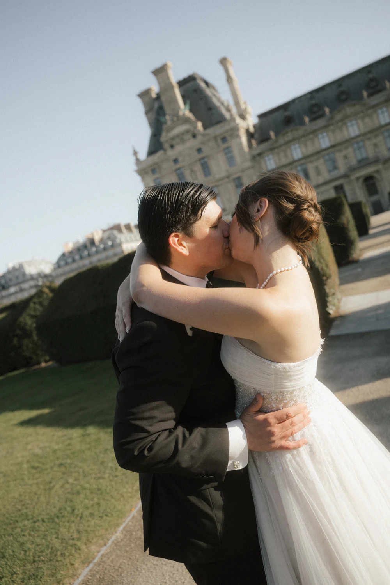
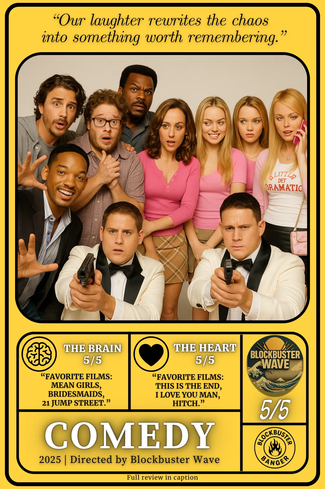
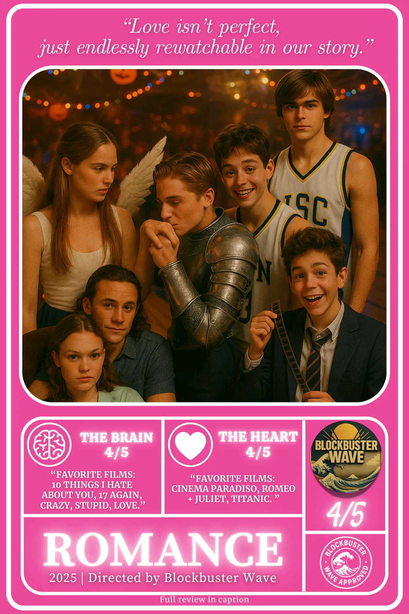
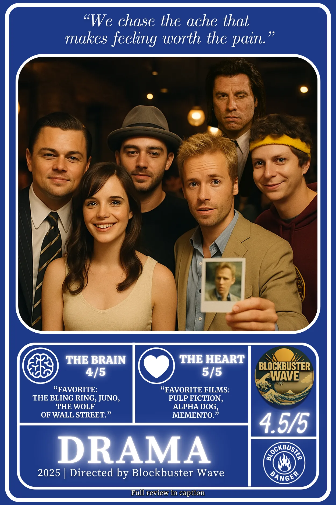
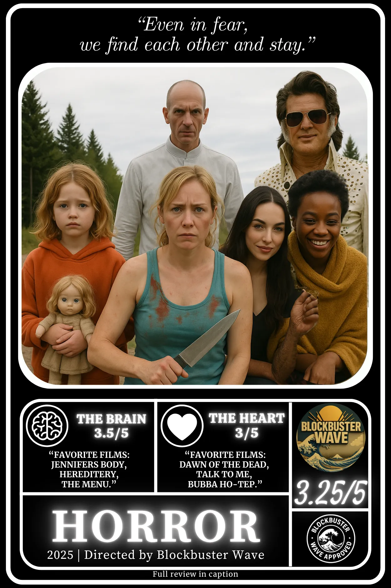
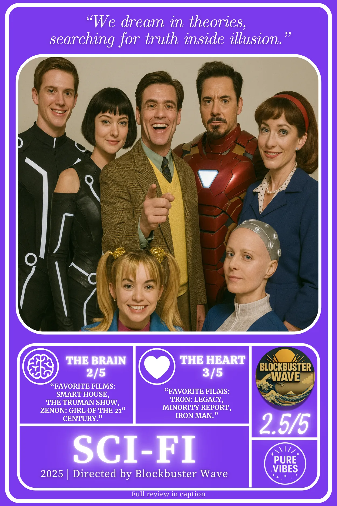
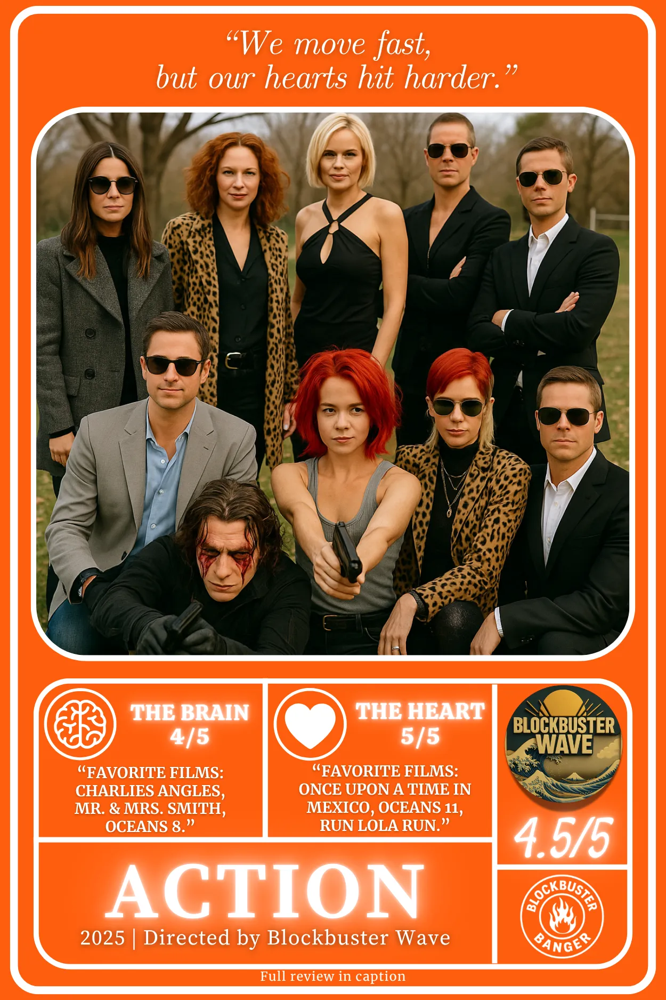
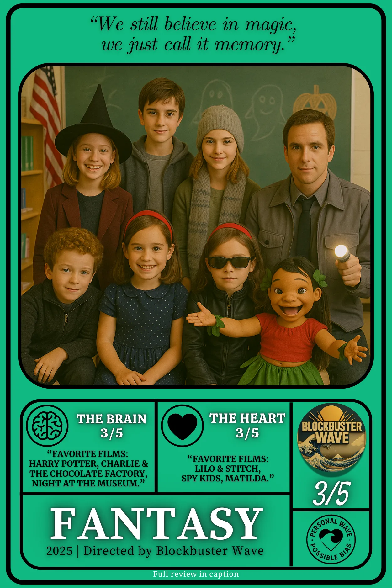
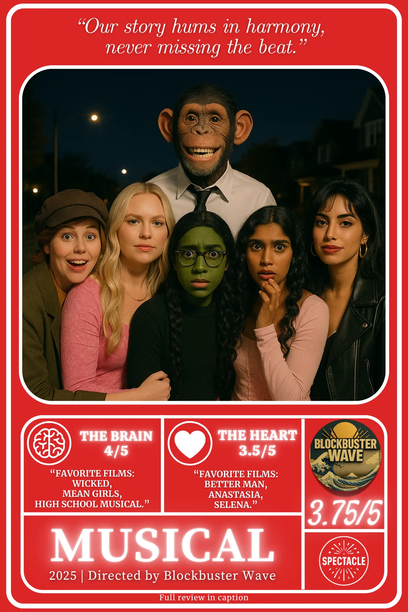
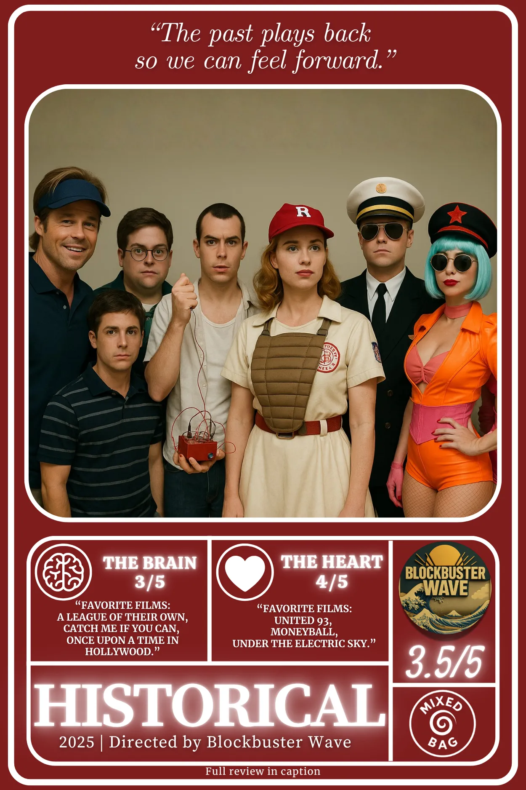

From the Brain
Brianna
One half of the conversation. Her score and her response have room to stand on their own—even when a film is simply outside her lane.

 Two perspectives. One shared screen.
Two perspectives. One shared screen.Brianna + Jonathan
La Ola Cinema Club is our place for the movies we watch and the conversations they leave behind. We bring two perspectives, and we don’t always leave the theater with the same opinion.

From the Brain
One half of the conversation. Her score and her response have room to stand on their own—even when a film is simply outside her lane.

From the Heart
The other half. What entertained, what connected, and what stayed with him after the screen went dark.
The films we come back to
A little more of us, genre by genre. The original nine lists come from our saved favorites cards. The new Thriller lineup is a draft for us to choose together. The lines above each list are Club genre notes, not film dialogue or personal review quotes.

If we’re still quoting it a week later, it did its job.

Give us chemistry worth rooting for.

Characters we believe. Choices we keep talking about.

Make us tense. Make us care. Then scare the hell out of us.

Give us a big idea—and a reason to care about it.

Big swings, real stakes, and a chase worth the ticket.

Build a world we want to get lost in.

Songs we replay. Performances we remember.

Make the past feel like people, not a history lesson.

Keep us guessing. Make the payoff count.
Original genre illustrations, reframed for La Ola. Personal favorites are separate from review scores; the full original cards stay in the archive.
The collection began as Blockbuster Wave. La Ola Cinema Club carries it forward with new branding, genre colors, Club Stamps, and space for original ideas.
The older artwork is still here. It’s part of the collection’s history, alongside the newer Club cards. Every film keeps its place on the shelf.
The Club belongs to the wider OLA HQ world: a home for what we make, what we keep, and the ideas that become something more. The larger OLA Worlds cinema portal is a future chapter. This is where we watch, review, and imagine together now.